、「萬字牌/萬」
、「萬字牌/萬」 三門，每門有序數從一至九的牌各四張。第二種字牌，包括「東、南、西、北」四款「風牌」及「中、發、白」
三門，每門有序數從一至九的牌各四張。第二種字牌，包括「東、南、西、北」四款「風牌」及「中、發、白」 三款「三元牌」，每款四張。因此用於遊戲的麻將至少136張，在台灣有時候會加入「梅、蘭、菊、竹、春、夏、秋、冬」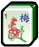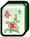八張花牌。
三款「三元牌」，每款四張。因此用於遊戲的麻將至少136張，在台灣有時候會加入「梅、蘭、菊、竹、春、夏、秋、冬」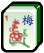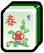八張花牌。
麻將或麻雀是一種源自中國的策略遊戲，戲參與者以四人居多，但也有二人、三人等變種（在日本、韓國較為常見）。麻將在各地的規則（尤其是計分方法）有很大不同，但基本目標都是通過一系列置換和取捨規則拼出某個特定組合的牌型，並阻止對手達成相同目的。遊戲側重技巧、策略運用和計算，但也涉及相當多的運氣成份。比起撲克牌，麻將的組合方式更為變化多端，需要通過複雜的機率分析才能預測結果。但麻將需要記憶的規則胡牌型也比一般撲克牌戲要多得多。(取自維基百科)
麻將牌分別有分「筒子牌/餅」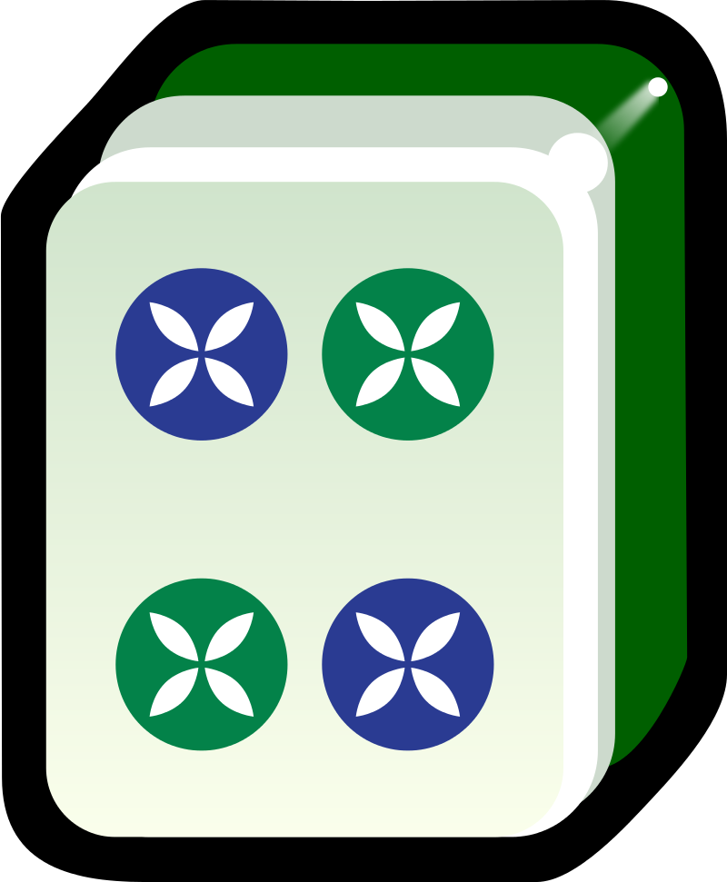、「索子牌/條」、「萬字牌/萬」三門，每門有序數從一至九的牌各四張。第二種字牌，包括「東、南、西、北」四款「風牌」及「中、發、白」三款「三元牌」，每款四張。因此用於遊戲的麻將至少136張，在台灣有時候會加入「梅、蘭、菊、竹、春、夏、秋、冬」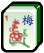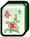八張花牌。
簡單認識麻將的樣子後，接著要準備進入遊戲。首先這是牌桌剛開始的樣子，2張麻將疊起稱1墩，每排有18墩(有包括花牌)，接著會由莊家擲骰子來決定拿牌的位子和順序。
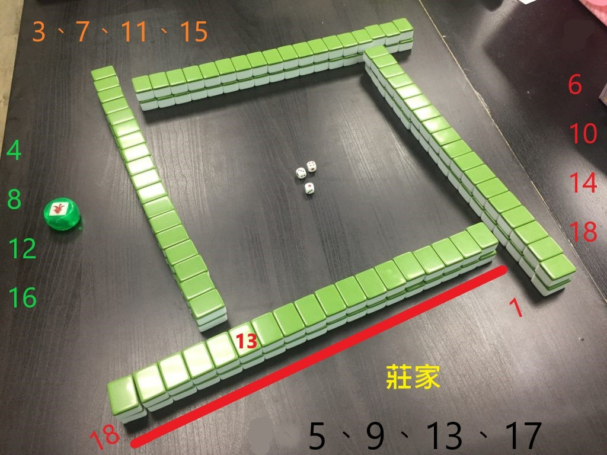
以照片為例，假設擲骰子總和為13，從莊家開始為1，逆時針數13，再從右至左數13，拿第14、15墩牌，再換右手邊(又稱下家)拿牌，各拿4次後停止，並從莊家開始補花，都補完花後則從莊家開始遊戲。
拿完牌後手上會有16張牌，每次開始都要摸一張牌，再打一張牌，這時候桌面如圖示，還沒拿完的牌墩會呈現類似ㄇ字型的樣子，拿牌會從ㄇ字型的第一畫(也就是左手邊)拿牌，補花或槓牌則會從另一端拿牌。
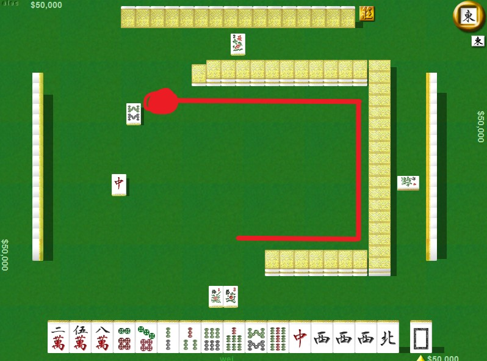
接下來解釋幾個名詞
1.吃牌:上家(左手邊)打出的牌剛好能讓你湊成1組小順。(只能吃上家)
EX:我手上有6筒7筒，上家打出5筒或8筒，我就能吃；或是手上有2萬4萬，上家打出3萬也能吃，然後吃的牌要夾在另外兩張牌中間並公開放在面前。如下圖所示
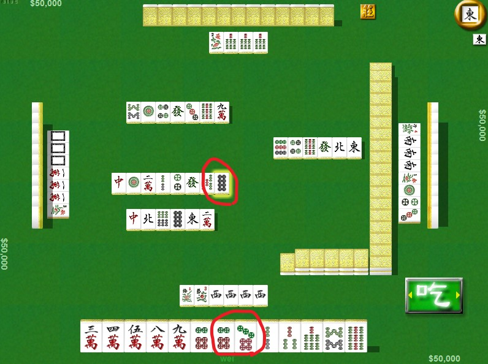 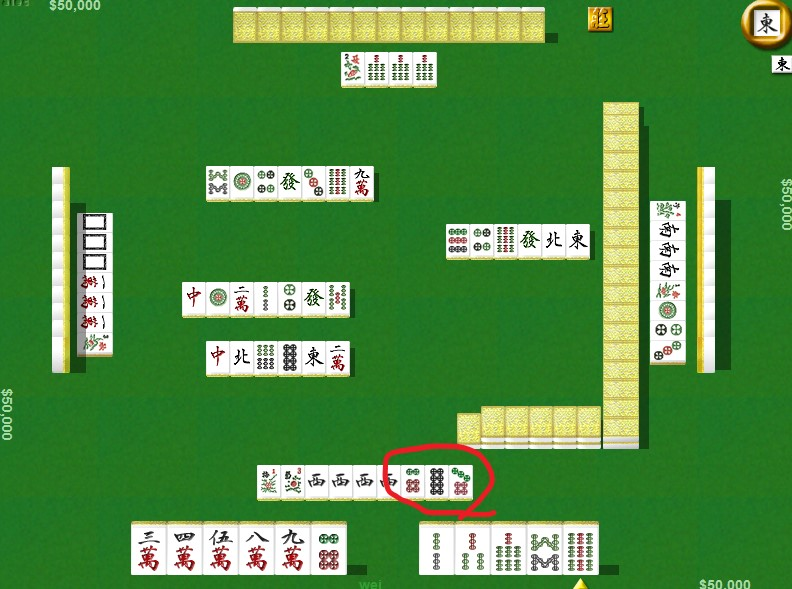
2.碰牌:另外3家打出的牌剛好能讓你湊成3張一樣的。
EX:我手上有2張九條，對家(對面)打出九條，這時候就可以碰，碰牌一樣要拿到面前公開
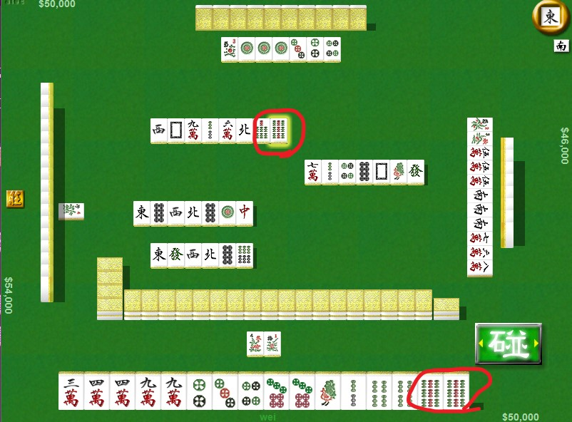 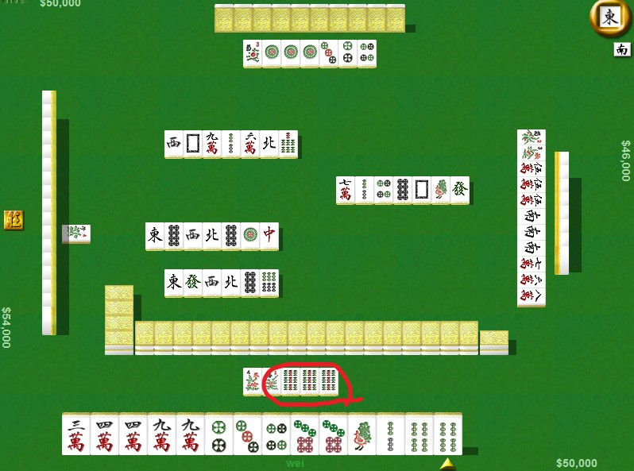
3.槓牌:手上有3張一樣的牌，下家或對家(不能槓上家)打出第4張牌就可以槓牌，並從ㄇ字型尾端補一張牌。
EX:我手上有3張西，對家打出第4張西，我就能槓牌。
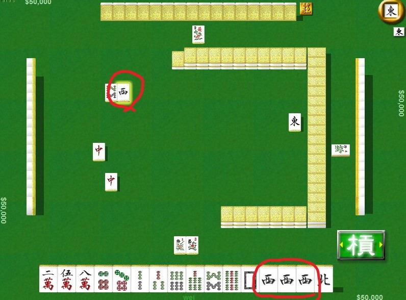
注:槓牌又分明槓和暗槓，明槓是拿別人打出的，必須公開，暗槓是自己摸到的，可不必公開。
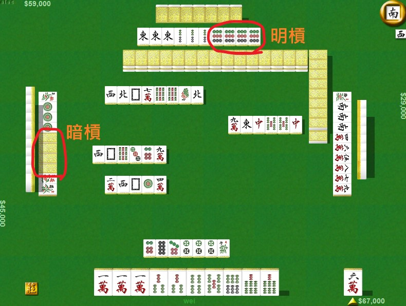
4.聽牌:當手中的16張牌只差1張牌即可胡牌時，稱為聽牌
EX:如圖所示，目前有4組+1個對子，差1組即可胡牌，所以此副牌聽得牌是2萬5萬。
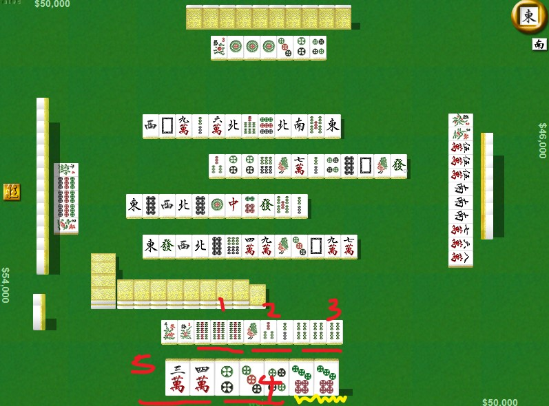
5.胡牌:當手中的牌有5個組合(吃、碰、槓)(有沒有公開都算)，再搭配1個對子(兩張一樣的)，共17張時，就算胡牌。
胡牌又分別人放槍和自摸，別人放槍是指另外3家丟出的牌剛好是聽的那張牌，自摸是指拿牌拿到聽得那張。
EX:如圖所示，目前有4組+2個對子，還差1組，所以聽8筒和6索，當有另一位玩家丟出8筒或6索，即胡牌。
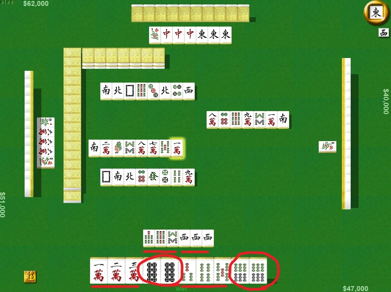 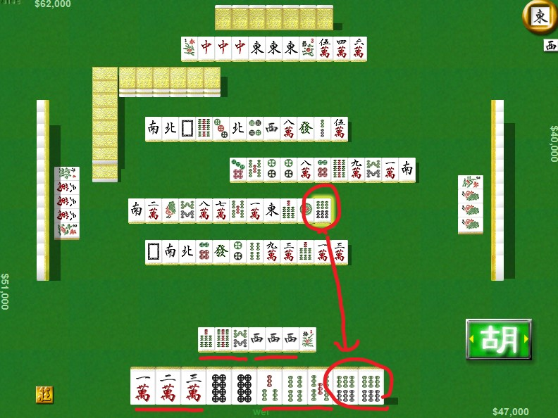
EX:手上有4組+1個對子還差1組，所以聽2索和5索，當我摸牌時摸到2索或5索，即為自摸。
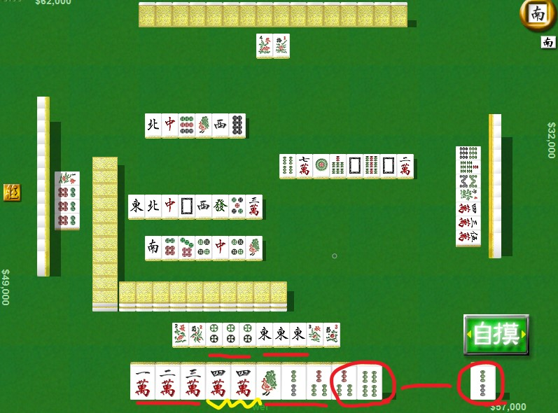
6.放槍:丟出的那張牌令另一位玩家胡牌，稱作放槍
EX:我打出的4索剛好是上家聽的牌，所以他胡、我放槍。